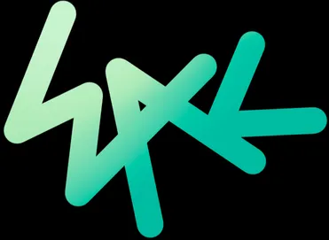

환영합니다!
자기소개 홈페이지 입니다. 위에 글자들을 눌러서 이동할 수 있습니다. 본문에 제목을 눌러서 본문의 내용을 접거나 펼칠 수 있습니다.
자기 소개

이름: 강한준(Kang Han-jun)
출생: 2003년 08월 생 강원도 강릉시
국적: 대한민국
가족: 아버지, 어머니, 여동생
MBTI: INTJ (ISTJ도 가끔 나온다.)
개요: 강원도 강릉시 출신으로 강원대학교 컴퓨터공학과를 다니고 있는 학생으로 강릉 명륜 고등학교를 졸업하고 강원대에 입학했다.
학교 생활: 중학교때 부터 컴퓨터에 대한 관심이 많았고 고등학교때도 수학과 과학등 이과과목을 잘하여 대입을 할때 수시로 대입을
준비를 했는데 6개 전부다 컴퓨터 관련 학과를 지원했다. 1학년떄 무난한 생활을 했고 성적은 무난히 나왔다. 지금은 웹 프로그래밍부터
리눅스, 파이썬, 자료구조, 논리 회로등 컴퓨터 관련으로 다양한 과목을 배우고 있다.
여담 ▼
- 이 자기 소개는 본인을 객관적으로 본 동시에 주관적 의견을 넣어서 3인칭 형식으로 만들었다. 마치 타인이 자기소개를 쓴것 같은 느낌이 들게 만든것이다.
- 은근 MBTI를 믿는 편이다. MBTI 설명이 본인과 매우 잘 맞다고 생각한다. 옛날에는 드론에도 관심있었다. 그래서 컴퓨터 공학과에 들어오기 전에는 프로그래밍을 배워서 드론을 설계하고 싶다는 생각도 했었다고 한다.
- 취업에 대한 고민이 매우 많다. 사실 2학년이 뭔 취업이냐고 할 수 있겠지만 군대를 갔다가 오면 3학년이고 거의 2년, 3년안에 졸업 준비하고 취업을 해야 한다는 생각에 고민이 매우 많다고.
- 고등학교 1학년때 회계사를 준비해볼까 라는 생각도 했지만 사회를 못해서 포기했다고 한다.
- 현재 메타버스와, vr, 인공지능에 대해 매우 관심이 있다. 옛날에는 메타버스에 대해 회의적이였다. 사람들이 막 설명하고 이게 미래다 하면서 설명하는 모든 것들이 이미 다양한 게임에 구현이 되어있어서 지금도 존재하는 것들을 전문적 용어들로 부풀려서 사기를 치는 것 같다 라고 생각을 했었다. 지금은 메타버스에서는 왁타버스에 대해 매우 관심이 있고 인공지능 쪽에서는 ai 그림 생성기와 동영상, 노래에 대해 메우 관심이 있다. 자세한건 관심사에서.
- 코로나에 걸리고 엄청 고생했다. 그 뒤로 건강에 대해 관심이 많아져서 복수전공으로 정밀의료융합학과를 신청했다.
METAVERSE·VR
왁타버스는 스트리머이자 유튜버인 우왁굳이 기존 고정 맴버를 대체할 새로운 고정 멤버 시스템을 런칭하기로 했다. 이거이 왁타버스에 시작이였다. 자신의 시청자 참여 콘텐츠 제작 커뮤니티를 '메타버스'라는 개념을 도입하여 우왁굳(Woowakgood) + 메타버스(Metaverse)의 합성어인 ‘왁타버스(WAKTAVERS)’다. 우왁굳, 고정멤버, ‘이세돌’ 멤버, 그리고 이들의 팬 등이 왁타버스에 살고 있다고 설정되어 있다. VR챗의 가상세계인 왁타버스, 그 메타버스 세상에 ‘ 이세돌’이라는 버추얼 아이돌이 존재하고 있는 것이다. 내가 왁타버스에 관심을 갖게 된 계기는 코로나로 인해 엄청난 성장을 한 게임계와 메타버스가 잘 어울러져 있기 때문에 관심을 갖게 되었다. 이들은 VR 챗이라는 게임에서 주로 활동하는데 이 게임에서 VR을 이용하여 다양한 아바타를 끼고 VR과 트래커를 이용해서 몸을 직접 움직이며 게임하고 예능을 하는 등 다양한 활동을 하는데 있어서 VR은 메타버스와 떨어질 수 없는 것이다. 메타버스에 주된 상징성은 다양한 삶을, 다른 삶을 살고 다양한 사람들을 사이버 공간에서 만나 같이 놀고 얘기하고 하는데 주 목표를 가지고 있는데 여기서는 이세계 아이돌이라는 버츄얼 아이돌 그룹부터 고정 멤버라는 가상의 컨셉을 가지고 왁굳의 방송에 고정적으로 출연하는 시청자들이 존재하고 공식 커뮤니티인 왁물원과 유튜브에서 활동하며 다양한 이벤트와 노래를 내거나, 가요제를 하거나, 예능등 많은 활동을 보여줬다. 특히 고멤 가요제를 얘기하지 않을수 없다. 고멤가요제는 실시간 시청자수 8만명 정도를 찍고 유튜브 조회수로는 모든 뮤비들을 합해서 거의 3300만 가까이 찍었을 정도로 파급력이 어마어마하다. 이로인해 다양한 사람들이 모여서 놀고 다른 삶을 살고 한번 왁타버스에 도움이 되기 위해, 자신이 좋아하는 사람을 위해, 자신의 꿈, 미래를 위해 여기서 일하면서 대학에 들어가거나 사람들에게 긍정적인 에너지를 주거나 하며 현실 세계와 가상 세계에 모두 영향을 주는 이것이 진정한 메타버스가 아닐까라는 생각이 든다. 메타버스는 구성원들이 만들어가는 가상세계다. 그런데 가상공간이 만들어지는 물질적 토대를 위해서는 상당한 규모의 자금과 인력이 필요한 것이 현실이다. 그러다보니 대부분의 메타버스 프로젝트들은 거대 IT 기업에서 주도권을 쥐고 가 상세계를 만들게 된다. 이런 거대 자본의 메타버스에서 아바타로 활동하는 구성원들이 주도권을 가지고 가상세계를 만드는 주체가 되는 것은 사실상 어렵다. 그런데 ‘왁타버스’는 구성원들이 함께 만들어가는 메타버스를 지향하는 자생적인 공동체라는 점에서 내가 참여하고 세계를 만들어가고 확장해나간다는 것에서 다양한 사람들이 몰리고 사람들이 세계와 함께 성장하는 것이 메타버스라고 생각한다.
연관 기사:
AI